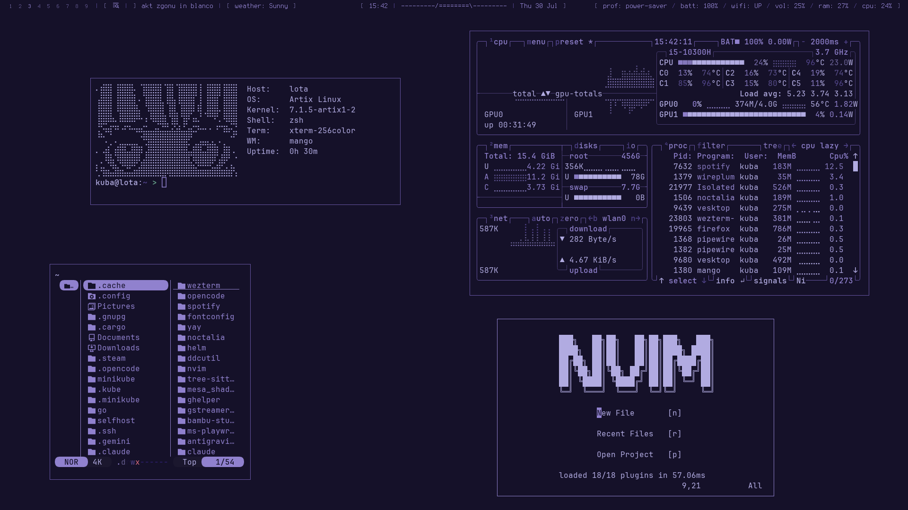
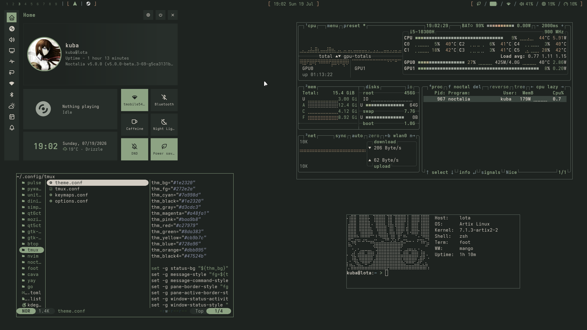

Welcome !!
I am Jakub known as taktojakuba on internet
About me:
Polish student who is into Linux and Devops, in free time I like to watch anime's I also rice Linux
Why did I make this website ?
I always wanted to have my own place on the internet so this is why I decided to make this website
My current setup
System Dinit with mangowm and noctalia v5 Tools: neovim,yazi,tmux,wezterm
Fun fact !
I rebinded my capslock key to Meta key
Rices:




Fav aesthetics: